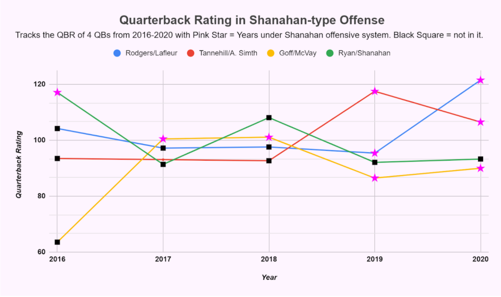
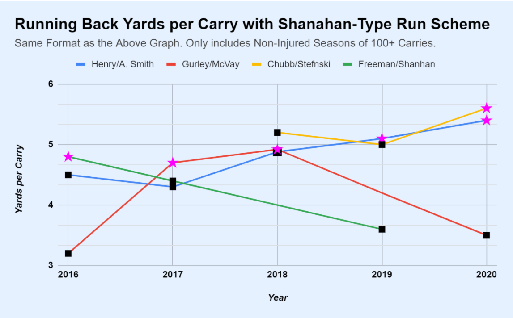

The Beginning of the Shanahan Coaching Tree
By Anish Cherwoo | March 30, 2021

The three most popular sports in America are football, basketball, and baseball. I can't help but notice that one of these has a whole other dimension to it that the others lack.
A baseball team has offensive and defensive philosophies but at the end of the day the team that strings together the most good at-bats and pitches effectively will come out on top (as long as it doesn't pull its ace who is dealing in the sixth inning of game six of the World Series).
Basketball similarly is a star driven league. The Lakers post the late Kobe Bryant were a .350 ball club. Then Lebron and AD show up and they win a title within 2 years. The Nets are now doing similar things with KD, Kyrie, and Harden and I promise neither of the two teams success has anything remotely to do with coaching or game-planning.
At the end of the day the NBA is a league where you need stars to win.
This brings me to football.
The dimension mentioned earlier is scheme.
It’s why Jared Goff, the first overall pick in the NFL Draft, did not win a single game in 2016 and two years later was 26-8 entering Super Bowl LIII. This phenomenon is nothing new though. It’s why John Elway went 24-22 from 1993-1995 then over the next three years was 42-9 with 2 Super Bowl victories.
Both of these cases specifically deal with the famous “Shanahan coaching tree.”
What makes this coaching tree successful?
The coaches that run the Shanahan scheme all use zone runs and play action passes that look identical to their run plays. For starters, this opens up a lot of room for their quick backs to rip off massive runs. In the passing game they are able to deceive the opponent with their indistinguishable pre snap looks, buying extra time for their quarterback to find an open receiver.
For reference, a list of coaches that currently run a similar style to this include: Kyle Shanahan (49ers), Sean McVay (Rams), Gary Kubiak (Vikings), Arthur Smith (Falcons), Mike Lafleur (Jets), Matt Lafluer (Packers), and Kevin Stefanski (Browns).
Digging into the details:
If we take a look at Matt Ryan’s career we’ll see that around 2016 he had a record year. He threw for almost 5000 yards with a 70% completion percentage, 38 TDs, and a 25 point lead in the Super Bowl (which they infamously blew). Shanahan left the Falcons and became the head coach of the 49ers the next year and Matt Ryan threw for about half the number of touchdowns and saw a 5% drop in his completion percentage.
In the case of Aaron Rodgers, he was coming off a year in which he threw the least number of touchdowns in his career when Offensive Coordinator Matt Lafleur was hired to be the team's new Head Coach. Two years later, he is the MVP of the league with the most touchdowns he has ever thrown in a single season.
Ryan Tannehill was a backup and is now a borderline Pro-Bowler who has gone to the playoffs two years in a row.
The chart below shows the relevant years in the years of quarterbacks Matt Ryan, Jared Goff, and Aaron Rodgers, and Ryan Tannehill’s careers to support the information.
Note that the number of pink stars increasing over time is not a coincidence.
Not only do the common counting stats receive a boost but what makes this scheme scary is that the efficiency metrics go through the roof.
Devonta Freeman and Todd Gurley took great advantage of the zone running scheme that this offense utilizes. Freeman while running in Shanahan’s scheme in Atlanta had a career high 4.8 yards per carry which put him top 10 in that statistic and by far the highest in his career. Gurley, who was already a top tier back, was able to assert himself as the clear number one running back in the NFL through McVay’s system. Once he left he became one of the most inefficient running backs (although much of that probably had to do with his knee arthritis).
Raheem Mostert, current running back for the San Francisco 49ers, was on more than 5 teams before SF and did not have any success. He now holds the 2nd spot on the all time list of most rushing yards in a playoff game at 220. Whenever he steps on the field he is good for 5 YPC which is a top tier number for the position.
This graph charts the yards per carry for the running backs in a Shanahan-type system vs the same running backs while not in that system anymore.
It is a fool proof system because not only do teams get beaten and tricked, but it does not require a Patrick Mahomes or a Tom Brady, or a Saquon Barkley, or a Christian McCaffrey.
Often like with Mostert or Tannehill, these coaches will utilize talent in players that nobody else saw in them.
I would also like to briefly mention that position coaches are an extension of the coordinators, and they need to work in unison with coordinators. They are also a major driver of player success and teaching scheme. When 49ers running back Jamycal Hasty was asked about why he chose to stay with the team after he had received better offers elsewhere, he quickly replied, “you know a legend coach Bobby T man, you can’t pass that up.”
Well, why doesn’t everyone run this offense then?
The only reason that everyone cannot do this is the coach. Not every coach knows how to design plays in such a clever fashion or how to manipulate the defense with pre-snap motion. Shanahan, McVay, and Lafleur are some of the best in the game at it because they all were on Mike Shanahan’s Washington Football Team back in 2012 where they learned the scheme together and built upon it uniquely.
With people like Arthur Smith and Stefanski getting hired over the past couple years the league seems to be catching on to this trend as they should be. Anyone that can run this scheme that is not already a coordinator should be hired immediately. This is why the Niners promoted the run game coordinator Mike McDaniel to Offensive Coordinator because teams like the Dolphins were trying to take him as their own.